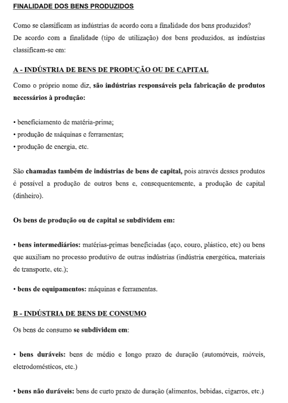
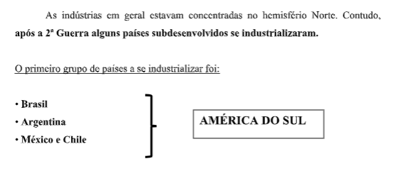
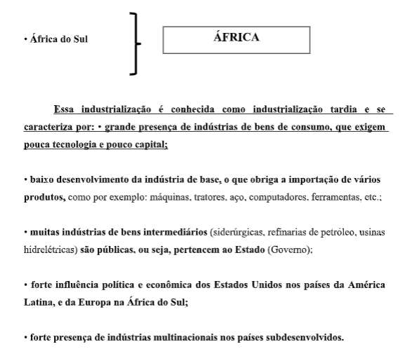

Capítulo 1: O Universo
Questão:Desde os primeiros registros da humanidade, encontramos vestígios de uma busca por explicações sobre o universo e os astros que o compõe. Muitas culturas atribuem ao universo a possibilidade de prever o futuro ou de guardar o passado, uma vez que crêem na transmutação de espíritos em estrelas, ou batizam constelações a partir de experiências míticas de épocas remotas. Como a geografia pode nos auxiliar no entendimento do universo?
Contextualização – O surgimento dos Metais que São Trabalhados pela Indústria MetalúrgicaPara os chefes tribais da América pré-colombiana, o material amarelo que eles encontraram brilhando no fundo dos rios ou enterrado sob o solo rochoso capturava o poder do Deus sol. Eles se vestiam com armaduras feitas a partir do metal encantado, acreditando que assim estariam protegidos. Mas eles se enganaram. O ouro, um metal relativamente macio, não foi páreo para o ferro dos espanhóis. Ainda assim, os povos nativos das Américas teriam hoje razões de sobra para se orgulhar do que acreditavam. A teoria de que o ouro veio do espaço ganhou aceitação nas últimas décadas pela maioria dos cientistas que buscava explicação para a abundância do metal no planeta. Atualmente, há apenas 1,3 gramas de ouro por 1 mil toneladas de outros materiais na crosta terrestre (a casca rochosa do planeta, que tem cerca de 40 quilômetros de espessura), mas essa proporção ainda é alta considerando os padrões de formação da Terra. Há dezenas de milhões de anos, a maior parte do ferro encontrado na superfície do planeta afundou da camada externa, conhecida como manto, para o núcleo da Terra. Ali, o ouro teria se misturado ao ferro e afundado junto com ele. Matthias Willbold, geólogo da Imperial College de Londres, compara o processo a gotas de vinagre no fundo de um prato repleto de azeite de oliva. Fonte: https://www.bbc.com/portuguese/noticias/2013/09/130919_ouro_espaco_lgb#:~:text=Os%20cie ntistas%20precisavam%20de%20uma,a%20Terra%22%2C%20diz%20Willbold.
A Geografia física consiste no estudo das características naturais existentes na superfície terrestre. Ou seja, aborda as características da Terra, sua dinâmica e elementos naturais, tais como o clima, relevo, geologia, topografia, vegetação, hidrografia, entre outros. Nesta seção, apresentamos conteúdos relacionados a esses assuntos. Clique sobre o assunto desejado pra visualizá-lo. O Sistema Solar é constituído pelo Sol e pelo conjunto dos corpos celestes localizados no mesmo campo gravitacional. Fazem parte do Sistema Solar os planetas, planetas anões, asteroides, cometas e os meteoroides (meteoritos). Existem inúmeras teorias que tentam explicar como o Sistema Solar foi formado. Entretanto, a mais aceita é a da Teoria Nebular ou Hipótese Nebular, que diz que a formação do sistema se deu através de uma grande nuvem formada por gases e poeira cósmica, que em algum momento começou a se contrair, acumulando matéria e energia, dando assim origem ao Sol.
Os planetas realizam sua órbita em torno do sol de forma elíptica, cada qual com suas próprias características, como por exemplo, massa, tamanho, gravidade e densidade. Os planetas que estão mais próximos do sol possuem composição sólida, enquanto os planetas menos próximos possuem composição gasosa. Entre os outros corpos celestes, os asteroides são menores que os planetas e são compostos por minerais não voláteis. Os cometas são compostos por gelos voláteis que se estendem pelo núcleo, cabeleira e cauda. Meteoroides são compostos por minúsculas partículas que, ao chegarem ao solo, caso isso ocorra, recebem o nome de meteoritos. O Sistema Solar está contido na Via Láctea, que ainda abriga cerca de 200 bilhões de estrelas.
Planetas do Sistema SolarPara iniciar o estudo desse tópico, assista ao vídeo abaixo e faça uma busca na internet, por imagens telescópicas do sistema solar. Anote em seu caderno o que mais lhe chamar a atenção.
Oito planetas orbitam em torno do Sol: Mercúrio, Vênus, Terra, Marte, Júpiter, Saturno, Urano e Netuno. Podemos classificar os planetas como sólidos ou gasosos, ou, mais especificamente, de acordo com suas características físico-químicas, como os planetas mais próximos do Sol sendo sólidos e densos, mas de insignificante massa; e os planetas mais distantes sendo gasosos massivos de baixa densidade.
Desde a sua descoberta em 1930 até 2006 Plutão foi considerado como o nono planeta do Sistema Solar. Porém em 2006, a União Astronômica Internacional criou a classificação de planeta anão. Atualmente, o Sistema Solar possui cinco planetas anões: Plutão, Eris, Haumea, Makemake, e Ceres. Todos são plutoides, com exceção de Ceres, localizado no cinturão de asteroides. As massas de todos estes objetos constituem em conjunto apenas uma pequena porção da massa total do Sistema Solar (0,14%), com o Sol concentrando a maior parte da massa total do Sistema Solar (99,86%). O espaço entre corpos celestes dentro do Sistema Solar não é vazio, sendo preenchido por plasma proveniente do vento solar, bem como poeira, gás e partículas elementares, que constituem o meio interplanetário.
Você conhece outros nomes de figuras formadas por estrelas?Estamos na Terra, você olha pra céu e vê a Lua e as estrelas. Quanto mais escuro o céu mais estrelas e outros astros se tornam visíveis. Na verdade, existe no Universo um número incontável de astros. Daqui da Terra, podemos ver uma pequeníssima parte do Universo. Os antigos olhavam para céu e imaginavam que alguns grupos de estrelas formavam figuras. E davam nomes para esses grupos de estrelas, chamados constelações. Além de estrelas, existem muitos outros tipos de astros. Os estudiosos do Universo, como os astrônomos, definem as diferenças entre esses astros, como você vai ver a seguir: - Estrelas, Planetas, Satélites, Asteroides, Cometas, Meteoroides ( estrelas cadentes ou meteoros).
   ASTRONOMIAastronomia, uma das mais antigas ciências, estuda os corpos celestes (como estrelas, planetas, cometas, nebulosas e galáxias) e os fenômenos que se originam fora da atmosfera da Terra. Nesta seção, estudaremos alguns assuntos na área de astronomia. Estações do ano As estações do ano ocorrem devido à inclinação da terra em relação ao sol. O movimento do nosso planeta em torno do sol dura um ano e recebe o nome de translação. Saiba mais sobre as quatro estações do ano: primavera, verão, outono e inverno.
Buraco negro Os buracos negros são uma das mais importantes descobertas científicas de todo o século XX. Saiba como eles se formam.
O que aprendi? Nesse capítulo você aprendeu a relacionar os fenômenos observados na natureza com o universo. Aprendeu também que a terra é um geóide, uma esfera com os pólos levemente achatados. Aprendeu também que a disciplina que estuda os astros é a astronomia, e que muitas culturas já utilizaram o estudo dos astros como forma de guiar-se, mas também com o intuito de descobrir o futuro e preservar o passado.